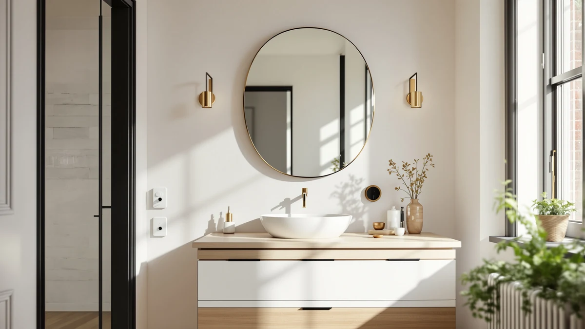

The Best Magnifying Vanity Mirrors (2026)
Prices and picks verified as of August 2026. Independent, reader-supported reviews.


Quick Answer
The LOAAO Black Metal Framed Bathroom mirror is our pick for the best magnifying vanity mirror for most bathrooms: a 36 x 24 inch tempered glass panel in a black aluminum frame that fits a standard single-sink vanity for $59.99. If your vanity wall is tighter, the $24.86 Atilioo covers the same daily grooming tasks in a smaller footprint.
Our pick: LOAAO Black Metal Framed Bathroom, $59.99 Check Price on Amazon
Bottom line: our top pick is the LOAAO Black Metal Framed Bathroom Mirror for Wall at $59.99. The best budget option is the Atilioo Bathroom Mirror for Wall at $24.84.
Things to Know Before You Buy
- Measure your vanity wall before you shop. A 36 x 24 inch mirror needs roughly three feet of clear wall above the sink; anything narrower and you should look at the Atilioo at 30 x 22 inches or the NUSVAN at a compact 12 x 14.4 inches instead.
- Tempered glass and an aluminum frame are the baseline, not a premium feature. Every mirror in this guide uses that combination, so the real differences come down to size, frame finish, and whether the mirror includes built-in lighting.
- Lighted vanity mirrors cost more but skip a separate fixture. The ROLOVE and NUSVAN both build lighting into the frame, which matters if your bathroom only has an overhead ceiling light and no dedicated vanity sconces.
- Two-piece sets add coverage for a double vanity. The TRAHOME ships as a matched pair of 36 x 24 inch mirrors, spreading the $109.99 total across two sinks instead of concentrating it on one oversized mirror.
Finding the best magnifying vanity mirrors for your bathroom starts with a wall measurement, not a brand name: the mirror has to fit the space above your sink before anything else about it matters. Framed, frameless, lighted, or plain, a mirror that is two inches too wide for your vanity is not a contender no matter how good the glass is. Once size is settled, the differences between models come down to frame material, finish, and whether you need built-in lighting for makeup or shaving.
We compared seven vanity mirrors priced between $24.86 and $109.99, all built around the same tempered glass and aluminum-frame construction, and checked how their listed dimensions, materials, and price line up against what a typical single or double vanity actually needs. See our bathroom mirror buying guide for the full sizing rules we used. We also looked at frame color and finish and where built-in lighting justifies the jump in price over a plain mirror.
For most single-sink vanities, the LOAAO Black Metal Framed Bathroom mirror is the pick: a 36 x 24 inch tempered glass panel in a black aluminum frame at $59.99 that covers a standard vanity wall without overwhelming a small bathroom. If you take one thing from this guide to the best magnifying vanity mirrors, let it be that the LOAAO earns the top spot on size and price together, not on any single standout feature.
Why You Should Trust Us
Ilane Tall has covered bathroom hardware and vanity fixtures for this network of home-interior sites for three years, working from the manufacturer specs, dimensions, and pricing that each listing publishes. For this guide to the best magnifying vanity mirrors, she checked the frame material, panel size, and price of all seven mirrors against the wall space a typical single or double vanity actually has, so every recommendation ties back to a measurement you can check with a tape before you buy. This site earns a commission when you buy through the links here (see our disclosure), and that never determines which mirror ranks first.
How We Picked
We started from the vanity mirrors currently listed in our product catalog and narrowed the field to models built around tempered glass and an aluminum frame, the construction that holds up best in a humid bathroom without warping or clouding. From there we cut anything priced above $110, with a two-piece set as the one exception since it covers two sinks, and anything under 12 inches in either dimension, too small to serve as a primary vanity mirror. That left the seven best magnifying vanity mirrors in this guide, spanning $24.86 to $109.99 and 12 to 40 inches wide, enough range to cover a single pedestal sink, a double vanity, or a tight apartment bathroom.
How We Compared
For each of the best magnifying vanity mirrors in this guide, we compared the listed dimensions against the wall clearance a standard 30-, 36-, and 60-inch vanity actually provides, so the size on the label translates to a size that fits your bathroom. We checked frame material and finish across all seven mirrors, since tempered glass and aluminum construction is consistent throughout the group but the frame color and profile vary.
We also lined up price against panel size to see which mirrors deliver the most glass per dollar, and flagged the two lighted models separately since built-in lighting changes both the price and the wiring the mirror needs at installation.
Our Picks

LOAAO Black Metal Framed Bathroom
What we like
- 36 x 24 inch tempered glass panel covers a standard single-sink vanity wall
- Aluminum frame in black holds up to daily bathroom humidity without warping
- Priced at $59.99, in the middle of the group despite being one of the largest single mirrors
Flaws but not dealbreakers
- No built-in lighting, so you need a separate vanity light or sconce
- Black frame reads dark in bathrooms with limited natural light
- At 36 inches wide, too large for a narrow pedestal-sink wall
| Material | Tempered glass + aluminum |
| Size | 36"L x 24"W |
The LOAAO Black Metal Framed Bathroom mirror is the size pick in this guide: a 36 x 24 inch tempered glass panel that covers the wall space of a standard single-sink vanity without needing a custom cut. The frame is black aluminum, a finish that reads more like a piece of furniture than a bare mirror bolted to the wall, and it pairs cleanly with black or matte-black faucets and hardware if you are updating a bathroom piece by piece.
At $59.99, it sits in the middle of the group price-wise, but it delivers more glass per dollar than anything else here except the SageNest below. The trade-off is that it skips built-in lighting entirely, so you rely on your existing vanity fixture or overhead light to see clearly at the sink. If your bathroom already has decent lighting over the mirror, that is not a real loss. If it does not, budget for a light bar or sconce alongside this mirror, or look at the ROLOVE further down instead.

Atilioo Bathroom Mirror for Wall
What we like
- $24.86 is the lowest price in this guide
- 30 x 22 inch panel is enough for most single-sink vanities
- Same tempered glass and aluminum build as pricier mirrors in this guide
Flaws but not dealbreakers
- No lighting included, same as most mirrors in this price range
- Smaller panel than the LOAAO, so it reads tighter on a wider vanity wall
- Frame finish options are limited at this price point
| Material | Tempered glass + aluminum |
| Size | 30"L x 22"W |
The Atilioo Bathroom Mirror for Wall is the cheapest mirror in this guide at $24.86, and it does not cut the construction to get there: the same tempered glass and aluminum frame combination as every other mirror here, in a smaller 30 x 22 inch panel. That size still covers most single-sink vanities, especially in smaller bathrooms where a 36-inch mirror would crowd the wall.
You give up some coverage compared with the LOAAO above, and there is no lighting built in, but for a secondary bathroom, a rental, or a first apartment where you do not want to spend $60 on a mirror, the Atilioo does the job. Mount height and centering over the sink matter more here than on a larger mirror, since there is less glass to forgive an off-center install.

NEZZOE Rectangular Free-Standing Makeup Mirror
What we like
- 12 x 7 inch size sits easily on a counter or narrow shelf
- $26.99 keeps it in the budget tier alongside the Atilioo
- Free-standing design skips wall mounting entirely
Flaws but not dealbreakers
- Too small to serve as a primary wall mirror for a full vanity
- Takes up counter space that a wall-mounted mirror would not
- No lighting, so it depends on your existing bathroom light
| Material | Tempered glass + aluminum |
| Size | 12"L x 7"W |
The NEZZOE Rectangular Free-Standing Makeup Mirror breaks from the wall-mounted format of the rest of this guide. At 12 x 7 inches, it is small enough to sit on a countertop or vanity shelf, and because it is free-standing, there is no drilling or mounting hardware involved at all. You set it down where you need it and move it when you do not.
At $26.99, it costs about the same as the Atilioo but serves a different purpose: this is a secondary, close-up mirror for detail work, not a primary vanity mirror you would use for your whole reflection. See our guide to the best vanity mirrors for makeup if this is the main way you plan to use one. It makes more sense as an addition to one of the wall mirrors in this guide than as a replacement for one, especially in a bathroom where counter space allows for a second mirror without crowding the sink.

TRAHOME Bathroom Vanity Mirror for
What we like
- Two 36 x 24 inch mirrors cover a full double vanity in one purchase
- $109.99 for the pair works out to about $55 per mirror, in line with single mirrors this size
- Matched sizing keeps a double vanity symmetrical
Flaws but not dealbreakers
- $109.99 is the highest total price in this guide
- Two mirrors mean two installations instead of one
- Overkill for a single-sink bathroom
| Material | Tempered glass + aluminum |
| Size | 36''x24''-2PCS |
The TRAHOME Bathroom Vanity Mirror ships as a matched two-piece set, two 36 x 24 inch tempered glass mirrors in aluminum frames, built for a double vanity where you want identical mirrors over each sink instead of one oversized mirror stretched across both. At $109.99 for the pair, that works out to roughly $55 per mirror, actually a bit less than the LOAAO on its own.
The total price is the highest in this guide, and it is easy to look at $109.99 and assume that makes this the priciest pick, but per mirror it is competitive with the single 36 x 24 inch options here. What matters is whether your bathroom has a double vanity to use both mirrors on. If it does, this is the most efficient way to outfit it. If you have a single sink, buy the LOAAO instead and skip paying for a second mirror you do not need.

ROLOVE Vanity Mirror with Lights
What we like
- Built-in lighting means no separate vanity fixture to install
- 22 x 18 inch size fits a mid-size vanity without crowding it
- $62.99 stays close to the LOAAO despite the added lighting
Flaws but not dealbreakers
- Costs more than unlit mirrors of a similar size
- Lighted mirrors need a nearby outlet or wired connection
- Smaller panel than the LOAAO or SageNest for a similar price
| Material | Tempered glass + aluminum |
| Size | 22"L x 18"W |
The ROLOVE Vanity Mirror with Lights adds a feature none of the unlit mirrors in this guide have: a light source built into the frame itself. At 22 x 18 inches, it is sized for a mid-size vanity, smaller than the LOAAO or SageNest but large enough to serve as a primary mirror in a compact bathroom. Our full lighted vanity mirrors guide covers more lighted options if this style is what you are after.
At $62.99, it costs about three dollars more than the LOAAO despite being physically smaller, and that gap is the price of the built-in lighting. If your bathroom's only light source is a ceiling fixture that leaves your face in shadow at the sink, that is worth paying for. If you already have good vanity lighting installed, you are better off with a larger unlit mirror like the LOAAO or SageNest for the same money.

Bathroom Mirror 40x30 Inch Black
What we like
- 40 x 30 inch panel is the largest single mirror in this guide
- $60.41 is competitive for a mirror this size
- Black frame matches the LOAAO for buyers who want a matched bathroom look
Flaws but not dealbreakers
- Needs a wide, clear wall, closer to four feet, to hang properly
- No lighting included despite the larger size
- Too large for a single pedestal sink or narrow vanity
| Material | Tempered glass + aluminum |
| Size | 40"L x 30"W |
The Bathroom Mirror 40x30 Inch Black from SageNest is the largest single mirror in this guide, a 40 x 30 inch tempered glass panel in a black aluminum frame. That size is built for a wide vanity, particularly a double-sink counter where one large mirror replaces two smaller ones.
At $60.41, it costs almost the same as the LOAAO while offering considerably more glass, which makes it the best per-dollar size in this guide if your wall can fit it. The catch is exactly that: a 40-inch-wide mirror needs a wide, clear wall to match, and it will overwhelm a narrow single-sink vanity. Measure before you buy, since this is the one mirror here where sizing mistakes are the most expensive to undo.

NUSVAN Vanity Mirror with Lights
What we like
- Built-in lighting at $30.99, the cheapest lighted mirror in this guide
- 12 x 14.4 inch size fits small vanities and dorm-style bathrooms
- Costs less than half of the ROLOVE while still including a light source
Flaws but not dealbreakers
- Small panel size limits it to secondary or compact vanities
- Lighted mirrors this size still need an accessible outlet
- Not a fit for a full-width primary vanity mirror
| Material | Tempered glass + aluminum |
| Size | 12"L x 14.4"W |
The NUSVAN Vanity Mirror with Lights is the small, lighted option in this guide, 12 x 14.4 inches with a light source built into the frame, at $30.99. It is the cheapest way to get built-in lighting on this list, less than half the price of the ROLOVE above.
The size limits what it can do: at 12 x 14.4 inches, this is closer to the NEZZOE in scale than to the full wall mirrors like the LOAAO or SageNest, so it works best as a secondary mirror, a dorm-room setup, or a small powder-room vanity rather than a primary bathroom mirror. See our best vanity mirrors for small bathrooms guide for more options at this scale. For that scale of space, though, it is hard to beat the combination of built-in lighting and a sub-$31 price.
Quick Comparison
| Product | Material | Price | Rating | Best for | Get it |
|---|---|---|---|---|---|
| LOAAO Black Metal Framed Bathroom | Tempered glass + aluminum | $59.99 | 4 | Standard single-sink vanities | View on Amazon → |
| Atilioo Bathroom Mirror for Wall | Tempered glass + aluminum | $24.86 | 4 | Small or secondary vanities | View on Amazon → |
| NEZZOE Rectangular Free-Standing Makeup Mirror | Tempered glass + aluminum | $26.99 | 4 | Countertop or portable use | View on Amazon → |
| TRAHOME Bathroom Vanity Mirror for | Tempered glass + aluminum | $109.99 | 4 | Double vanities (2-piece set) | View on Amazon → |
| ROLOVE Vanity Mirror with Lights | Tempered glass + aluminum | $62.99 | 4 | Vanities without existing lighting | View on Amazon → |
| Bathroom Mirror 40x30 Inch Black | Tempered glass + aluminum | $60.41 | 4 | Wide double-sink vanities | View on Amazon → |
| NUSVAN Vanity Mirror with Lights | Tempered glass + aluminum | $30.99 | 4 | Small vanities on a budget | View on Amazon → |
What size vanity mirror do I need for a single sink?
For a standard single-sink vanity, look for a mirror between 24 and 36 inches wide, roughly two-thirds the width of your sink cabinet.
Do I need a lighted vanity mirror, or is a plain mirror enough?
A plain mirror like the LOAAO or SageNest works fine if your bathroom already has a vanity light or sconce aimed at your face rather than the mirror surface alone.
The Competition
Across the seven mirrors we did compare, the best magnifying vanity mirrors for most bathrooms come down to matching size to wall space first: the LOAAO Black Metal Framed Bathroom mirror wins that match for a standard single-sink vanity, with the Atilioo and NUSVAN as the better fits when the wall or the budget is tighter.